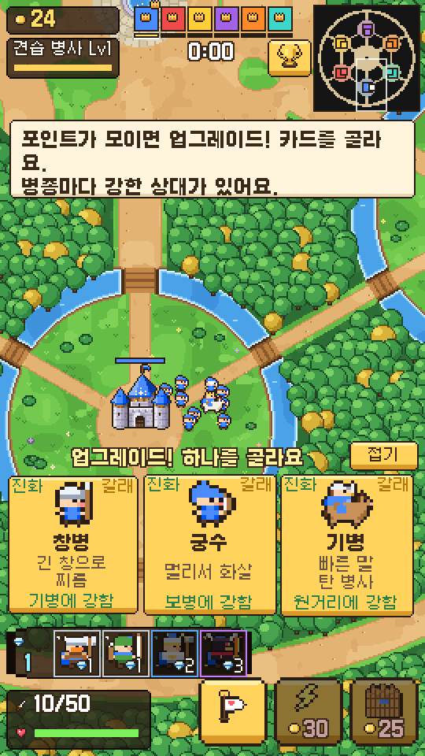

운빨블러드
스타크래프트 유즈맵 "랜덤블러드"를 모바일 세로 화면으로. 왕은 무적이지만 캐슬은 하나뿐 — 6개 왕국이 눈치를 보며 병력을 모으고, 빌드를 고르고, 공통 미션을 다퉈 얻은 보석으로 영웅을 불러 마지막 1명이 될 때까지 싸워요.

조작 (한 손)
| 왕 이동 | 화면을 터치한 곳으로 왕이 달려가고, 병사 · 영웅이 따라가며 알아서 싸워요 |
|---|---|
| 강화 | 내 캐슬을 눌러 돈으로 병사 · 캐슬 · 마법 강화 |
| 영웅 | 왼쪽 아래 영웅 칸을 눌러 보석으로 소환 (보석은 공통 미션으로) |
| 마법 | 덱의 마법 버튼을 누르고 쓸 곳을 터치 (돈을 내고 써요) |
| 집결 | 깃발 버튼: 싸움을 멈추고 모두 왕에게 달려와요 |
| 업그레이드 | 포인트가 모이면 카드 3장 중 하나 (접어 둘 수 있어요) |
처음 켜면 튜토리얼부터 시작해요. 휴대폰은 전체 화면이 가장 편해요.
게임 정보
| 규칙 | 6개 왕국 (나 + AI 왕 5명), 캐슬이 무너지면 탈락, 마지막 1명이 승리. 1 · 2 · 3등만 랭크 점수 |
|---|---|
| 콘텐츠 | 병종 5갈래 · 전문화 15종, 공성 병기 2종, 이름 있는 영웅 9명 (보석 1 ~ 4), 공통 미션 4종, 마법 4종 (덱에 2개), 캐슬 강화 |
| 판 밖 | 뽑기 (천장 · 10번 보장 · 확률 공개) · 카드 수집 · 업그레이드 Lv10 · 덱 편성 · 일일 미션 · 출석 · 상점 · 14일 시즌 랭킹 (실제 결제 없음) |
| 만든 도구 | Godot 4 · 270x480 세로 도트 화면, 그림 · 소리 · 전장은 모두 스크립트로 생성 |
| 상태 | 1차 틀 · 개발 중 (온라인 6인 대전은 나중에) |
기획 포인트
"가만히 있으면 도태된다" — 모으기만 하면 포인트가 안 오르고, 싸우면 남 좋은 일이 될 수도 있는 눈치 싸움이 핵심이에요.
공평한 6각형
6개 왕국이 정6각형으로 광장을 둘러싸 모두 같은 거리. 영지는 해자로 막혀 다리로만 나감
빌드 = 카드 3장
창병 · 궁수 · 기병 → 전문화 9종 → 군대 특성. 고를 때마다 선택지 3개
상성으로 대응
보병 → 기병 → 원거리 → 보병 (1.6배). 화면 위에 다른 왕국의 병종이 보여 보고 대응
판 안엔 운 없음
영웅은 덱에서 골라 보석으로. 보석은 1분마다 떨어지는 공통 미션을 먼저 해낸 왕국이 가짐
운은 판 밖에서
뽑기 · 업그레이드는 로비에서. 판 안 AI 왕국은 내 평균 카드 레벨 ±1로 맞춰 공정하게
성은 단단하게
캐슬은 사거리가 길고 여러 발 — 초반에 쳐들어가면 점수를 퍼 줌. 5분 뒤엔 결전 (캐슬 피해 2배)
싸고 빠르게 만드는 그래픽
- 병사 1종을 그리면 6팀 색은 색만 바꿔 자동
- 전문화 · 영웅은 같은 몸에 무기 · 투구 · 말만 바꿔 스크립트가 생성
- 전장은 타일 몇 종을 조합해 한 장으로 구움 (걸을 수 있는 칸 지도도 함께)
- 새 병종 · 새 맵을 빠르게 추가할 수 있는 구조
AI 왕 5명
- 병력을 모았다가 가깝고 약한 왕국을 노림 (나만 노리지 않음)
- 많이 잃으면 물러나 다시 모으고, 집이 공격받으면 돌아가 지킴
- 주변 왕국 빌드를 보고 상성으로 병종을 고름
- 적이 모인 곳에 돈을 내고 마법, 보석이 되면 덱의 비싼 영웅부터, 분수 미션엔 병력을 데리고 나섬
만든 과정
- 원안랜덤블러드를 모바일로 — 한 손 · 6명 · 캐슬 · 무적 왕 · 병사가 왕을 따라감 · 포인트 업그레이드 · 최대 50 · 마법 · 운빨존많겜 같은 귀여운 도트
- 1차 틀Habong 로고 → 로딩 → 튜토리얼 → 전투 → 결과 → 로비, 6각형 전장 · AI 5명 · 자동 대전 시험으로 판 길이 · 처리 시간 확인
- 빌드"업그레이드 때 선택지 3개" 원안 → 병종 13종 · 상성 · 군대 특성, 판이 늘어져서 결전 규칙 추가
- 운빨"영웅 병사 뽑기" 원안 → 등급 확률 · 영웅 9명 · 별 성장 · 꽉 찼을 때 더 높은 등급이면 교체
- 플레이 테스트따라올 때 버벅임 · 나무 · 물 위 걷기 → 대열 간격 · 몸 폭 확인, 싸움 중 안 따라옴 → 목줄 · [집결] 버튼
- 운 빼기"판 안 운빨은 빼고 판 밖 뽑기로" 원안 → 이름 있는 영웅 · 덱 · 보석 · 공통 미션 · 돈으로 마법 · 1 ~ 3등 랭크 점수 (다음: 신화 괴수 · 공성 · 뽑기와 덱 강화)
- 공성 · 갈래"마법사 · 도끼병 · 공성 병기" 원안 → 캐슬만 치는 투석기 · 충차, 도끼 · 마법 갈래, 덱의 3갈래만 판 안 카드에
- 판 밖운빨존많겜 화면 55장을 역기획 → 로비 탭 5개 · 왕국 소환 (천장 50 · 10번 희귀 보장) · 수집 · 덱 · 시즌 랭킹 · 일일 미션 · 출석 · 상점, 뽑기 2만 번 시험으로 확률 확인
- 최적화휴대폰 수준(CPU 4배 느리게)으로 측정 → 웹의 파일 찾기가 CPU 20% → 그림을 기억해 느린 프레임 18ms → 6ms
스크린샷


